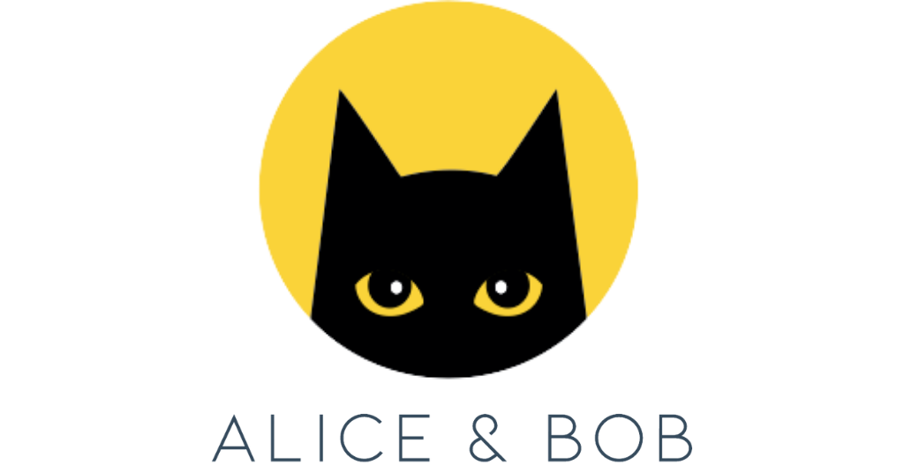
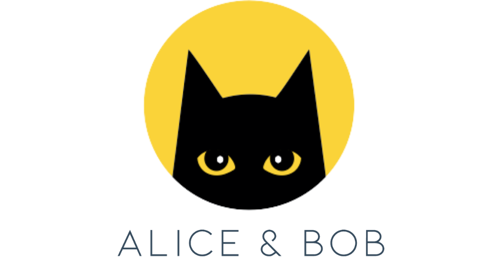
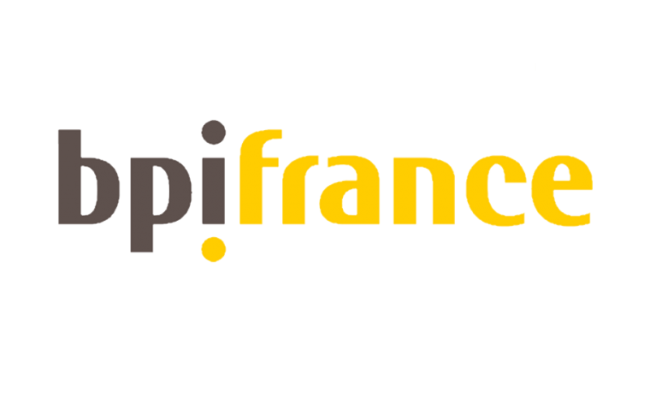

OPTIMIZING THE ENERGY OF QUANTUM COMPUTING
 


Our missions
Quantum Processors
Define, model and optimize the resource cost of the quantum processors of Quandela and Alice&Bob, in real use cases proposed by EDF, using the methodology developed by CNRS |QET>.
Energetic Advantage
Define and research the conditions of an energetic advantage for quantum computing compared to classical computing.
Our latest news
Who are we ?
EDF
A major energy player in France, specializes in nuclear production and electricity supply.
Alice & Bob
A French startup founded in 2020, specializing in quantum computing. Their goal is to build the first universal and error-tolerant optical quantum computer, surpassing the experimental results of other tech giants.
CNRS |QET>
A major global player in fundamental research. It is the sole French organization active in all scientific fields, with over 1,100 research laboratories in France and abroad. Its mission is to mobilize all sciences to address contemporary world challenges.
Quandela
An European startup that offers modular, scalable, energy-efficient photonic quantum computers accessible both on the cloud and locally.
QEI#
A global community of experts addressing the physical resource costs associated with emerging quantum technologies. It focuses on estimating and minimizing these costs, including environmental and energy impacts.
“The responsible use of digital technologies
is an EDF Group initiative. Since 2018, EDF
has been involved in evaluating the benefits
of quantum for our businesses. In addition to
the computational advantage, we consider the
energy advantage to be one of the key benefits
of this technology.”
said Joseph Mikael, Head of Quantum Computation.
“As co-founders of the Quantum Energy Initiative,
our CNRS team is extremely excited by OECQ, which
is the first large project devoted to the exploration
of a quantum energetic advantage in real quantum
computers. It will consolidate the lead of France
on quantum energetics and bring into existence a
new way of practicing responsible innovation, which
takes into account the fact that energetic resources
are finite.”
said Alexia Auffèves, CNRS Senior Scientist.
“One of the primary objectives of the OECQ project
is to seize the opportunity to develop quantum
computing technology in an energy-efficient manner
from the outset, as quantum computing is still in its nascent
stages, this project will dimension the future energy
infrastructures that will support mature quantum technology.
Additionally, since energy consumption is a key cost driver
in quantum tech, making these processes more efficient offers
a significant competitive advantage.”
said Théau Peronnin, CEO of Alice
& Bob.
"We recognize that energy efficiency is paramount
in the development of quantum computing technology,as we push
the boundaries of what is possible, it's crucial that
we do so in a sustainable manner.”
said Niccolo Somaschi, CEO of Quandela.
This project was financed by
The French State as part of France 2030.

The European Union - Next Generation EU as part of the France Relance plan.

The French Public Investment bank.
